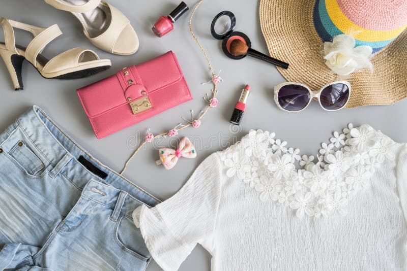

In the ever-evolving realm of fashion, women's style stands as a testament to creativity, individuality, and the constant pursuit of self-expression. From timeless classics to avant-garde trends, the world of women's fashion is a captivating canvas that weaves together tradition and innovation.

Exploring Timeless Classics:
Classic pieces are the backbone of any well-curated wardrobe. The crisp white shirt, the little black dress, and the tailored blazer are not merely garments; they are statements of enduring style. These timeless classics effortlessly transition from season to season, providing a foundation upon which one can build a versatile and elegant wardrobe. The beauty lies in their adaptability – whether dressed up for a formal affair or down for a casual day out, these staples are the epitome of timeless sophistication.
Celebrating Diversity in Style:
The beauty of women's fashion lies in its ability to embrace diversity. Fashion is not a one-size-fits-all concept; instead, it is a celebration of individuality. From bohemian free spirits to those who favor a minimalist aesthetic, the vast spectrum of styles ensures that every woman can find her sartorial voice. Fashion is a language, and through our clothing choices, we can communicate our personality, aspirations, and moods to the world.
Empowerment through Fashion:
Fashion has the power to empower. The right outfit has the ability to boost confidence, elevate mood, and reflect a woman's strength. In a world where every day is an opportunity to make a statement, fashion becomes a tool of empowerment. Whether it's a power suit that exudes authority in the boardroom or a bold ensemble that radiates confidence on the streets, fashion enables women to navigate the world with poise and self-assurance.
Trends and Innovation:
The fashion landscape is continually evolving, with trends that captivate and inspire. From vibrant colors and bold patterns to sustainable and eco-friendly choices, the industry is ever-conscious of the need for innovation. Exploring and experimenting with trends allows women to stay current while infusing their personal flair into the latest styles. After all, fashion is about self-expression and the joy of discovery.